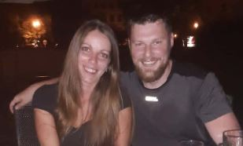
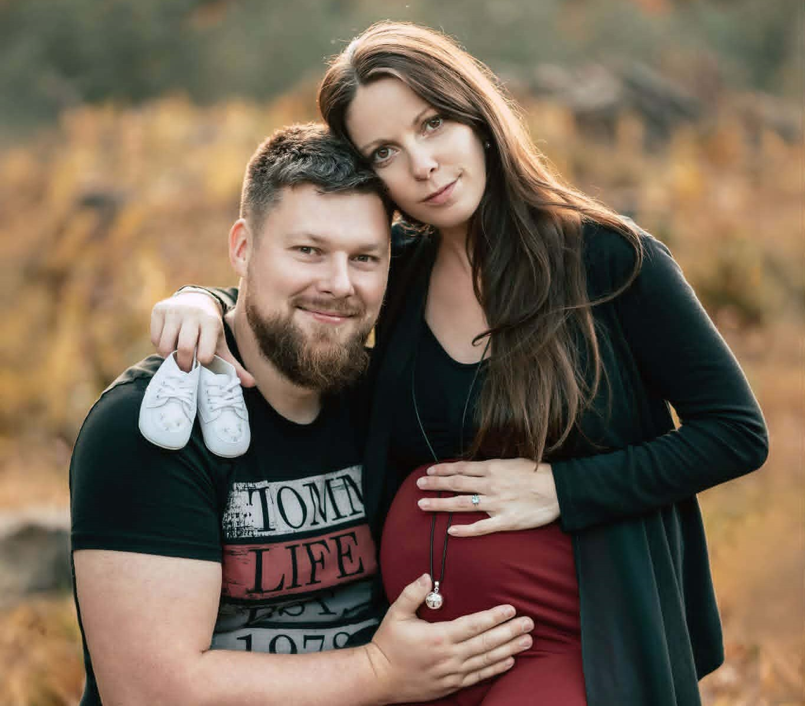
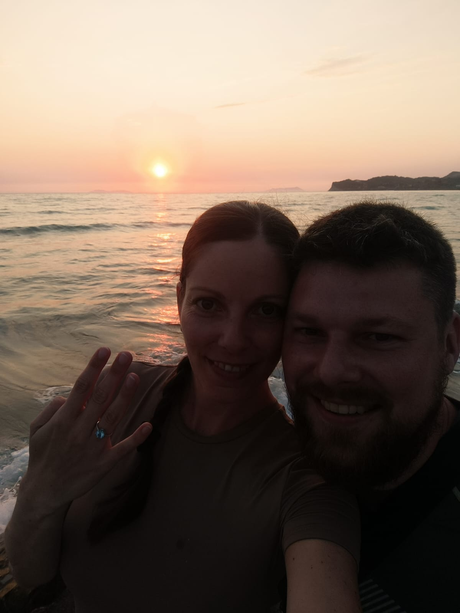
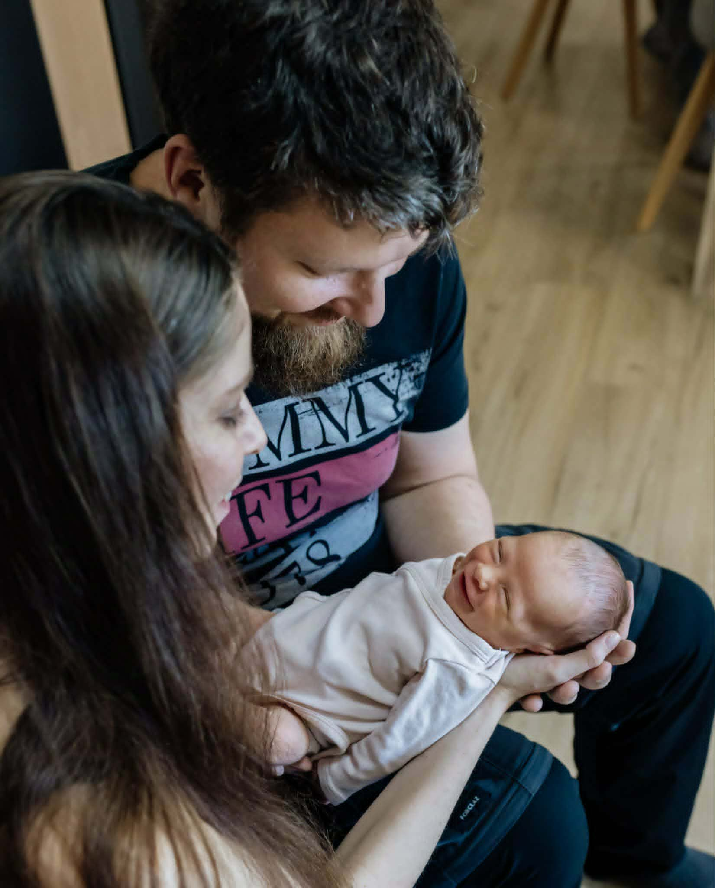
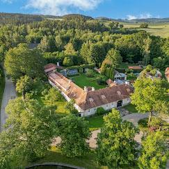
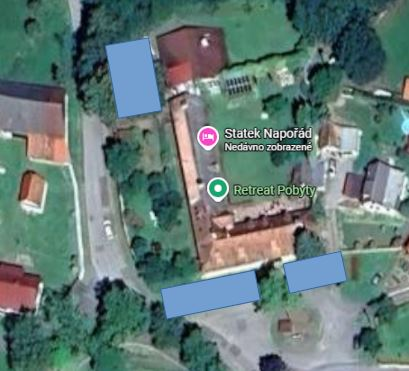

Jste srdečně zváni na naší Špičkovou svatbu dne 26. června 2026.
"Těšíme se, že náš svatební den oslavíte s námi!"


Orientační plán našeho svatebního dne:
10:30 – Příjezd ubytovaných hostů
nejpozději 11:00 – Příjezd ostatních hostů (welcome drink a lehké občerstvení)
12:00 – Svatební obřad
po obřadu – Společné focení
13:30 – Slavnostní přípitek, polévka, raut
14:30 – Krájení dortu, káva
15:00 – 16:00 – První tanec, focení novomanželů
16:00 – Házení svatební kytice, novomanželský kvíz
17:00 – Hudba (kapela Duo Celebration), volná zábava
Pro ubytované hosty je možnost příjezdu a ubytování možná již ve čtvrtek 25. června 2026 po 17:00.
Ubytování na pokoji: Jsou zde připravené povlečené postele. Součástí každého pokoje je vlastní koupelna a WC.
Ubytování v podkroví: Čeká na Vás „Noční oáza“, což je obří pokoj, kde se nachází 18 postelí. Koupelna a WC jsou společné na chodbě. S sebou si prosím vezměte spacák (nebo deku) a polštářek.
Fotografie pokojů si můžete prohlédnout zde:
www.stateknaporad.cz - Fotogalerie pokojů
Pokud na Statku přespáváte už od čtvrtka, moc se na Vás těšíme! Jen pár organizačních drobností:
Statek Napořád

Adresa: Marčovice 3, 387 01, Předslavice-Volyně
Více informací a fotografií naleznete na oficiálních stránkách:
www.stateknaporad.cz
Parkovat lze na místech vyznačených viz foto níže. V případě nejasností s parkováním v den svatby se neváhejte obrátit na naši svatební koordinátorku.

Naším největším přáním je, abyste si celý den užili naplno a cítili se uvolněně. Neřešte proto prosím žádná přísná pravidla – oblečte si to, v čem se cítíte dobře a co máte rádi. Ať už to budou Vaše oblíbené šaty, košile bez kravaty nebo i slušné džíny. Na volnou zábavu se můžete převléci, abyste s námi vydrželi protancovat noc.
Malé varování pro dámy: Statek má své kouzlo, ale i trávu a kamínky, tak zvažte, jestli jehlové podpatky nebudou spíše na obtíž.
Tím největším darem pro nás bude, když náš svatební den oslavíte společně s námi.
Pokud byste nás přesto chtěli obdarovat, budeme vděčni za jakýkoliv příspěvek na naši společnou cestu životem. Vzhledem k tomu, že už máme domácnost kompletně vybavenou, preferujeme finanční příspěvky, které nám můžete pohodlně zaslat prostřednictvím QR kódu níže.
Focení při obřadu: Rádi bychom Vás požádali, abyste během obřadu nechali telefony i fotoaparáty v kapsách a neužívali si moment přes displej. Budeme mít s sebou profesionálního fotografa, který všechny důležité okamžiky zachytí, a my se s Vámi o výsledné fotky a videa velmi rádi podělíme.
Rýže a konfety: Velmi uvítáme, pokud se vyhnete házení rýže či vystřelování jakýchkoliv konfet. Důvod je ryze praktický – od náročného úklidu celého areálu až po záchranu svatebních účesů (především toho nevěstina).
Rozbíjení talíře a střepy: Z preventivních a bezpečnostních důvodů bychom na svatbě rádi vynechali tradiční rozbíjení talíře. Jelikož s námi budou slavit i malé děti, chceme se vyhnout jakémukoliv riziku zranění o střepy.
Únos nevěsty: Tuto svatební tradici bychom raději oželeli. Je to velké a upřímné přání ženicha, který by rád strávil celý svatební večer po boku své nevěsty.
V případě potřeby se neváhejte obrátit na naši skvělou koordinátorku:
Lucie Machníková
tel.: +420 776 293 155